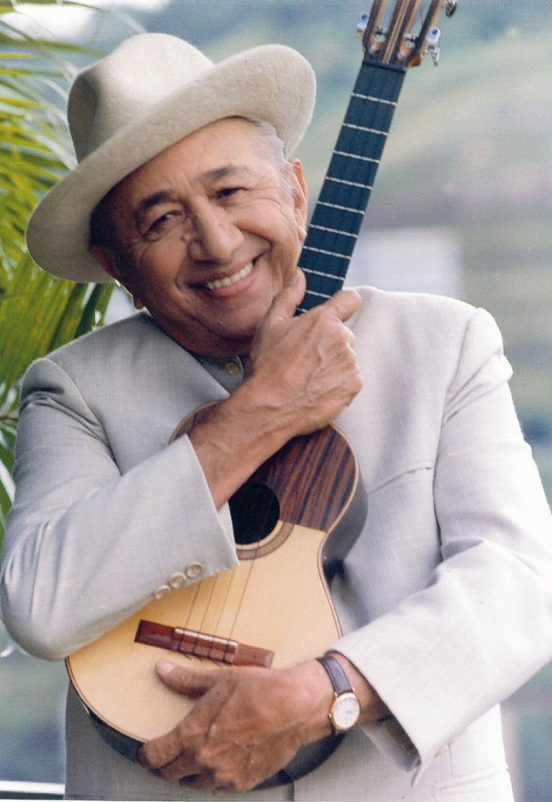

Cantante
Simon Diaz
Biografia
Simón Narciso Díaz Márquez OL (Barbacoas, Estado Guárico, 8 de agosto de 1928 - Caracas, 19 de febrero de 2014),1 más conocido como Simón Díaz o generalmente por su apodo El Tío Simón, fue un cantante, músico, compositor, poeta, humorista, caricaturista y empresario venezolano, uno de los mayores exponentes musicales que ha tenido Venezuela.
Discografia
- Parranda Criolla
- Caracha Negro
- Gaitas y Parrandas con Simón
- Golpe y Pasaje: Caballo Viejo
- El Cuatro y el Interés
- Amor Enguayabao
- Recuerda y Canta
- Aguinaldos y Tradiciones
Familia
Cónyuge:
- Betty García Urbano
Hijos:
- Simón Humberto Díaz García (1961)
- Bettsymar Coromoto Díaz García (1965)
- Juan Bautista Díaz García (1967-2013)